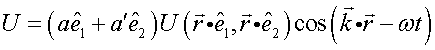
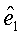
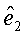
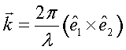
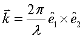
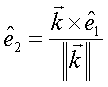

Sets the polarization properties for future ray creation.
Syntax
POLARIZ X [ a a' ]
Y
Z
OFF
| Option | Description |
|---|
| X, Y, or Z | coordinate axis |
| a a' | complex amplitudes |
| OFF | flag to turn polarization direction off |
Remarks
- Sets the polarization direction and
optionally the complex amplitudes of the two orthogonal polarization components of
rays, for future ray creation (RAYSET and GRID) and analyses (SPREAD and FIELD).
- Initializes the complex coefficients
a and a'> for the two orthogonal
components.
- POLARIZ selects the E field direction in the FIELD command. The
E field is parallel to the specified coordinate axis.
- Must precede the GRID, RAYSET,
FIELD and SPREAD commands as it is a physical
property of the rays.
- The FRESNEL BOTH command
should be used in conjunction with POLARIZ to configure the
system geometry to include polarization effects.
- A transverse optical field can be written
as:

where  and  are orthogonal real
(linear) unit vectors, and the wave-vector

gives
the propagation direction of the field. The POLARIZ command
allows specification of complex amplitudes a and a' to represent the polarization of the electric field. The unit
vector is parallel to
the coordinate axis specified by the parameter immediately before a. The unit
vector is derived from
the propagation direction of each subsequently defined source to satisfy the
transverse condition,

that is to say,

- ASAP modifies the polarization of rays as
needed to avoid the creation of axial fields, and warns when this occurs.
Modifications do not permanently change the POLARIZ settings.
- SHOW presents the
complete complex coefficients of POLARIZ.
POLARIZ Examples